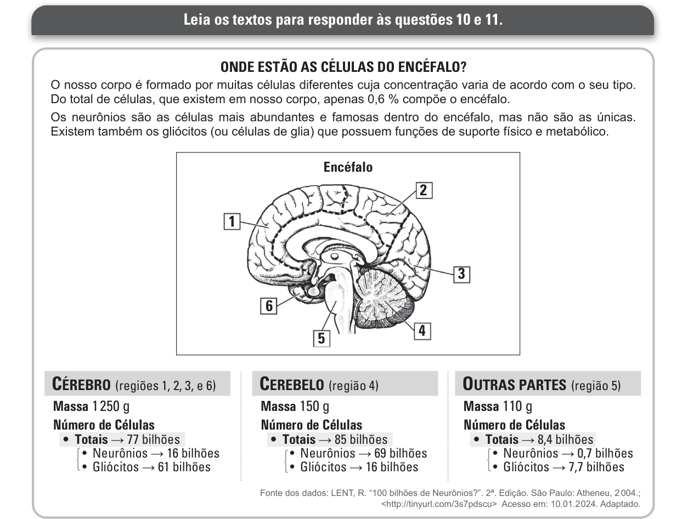
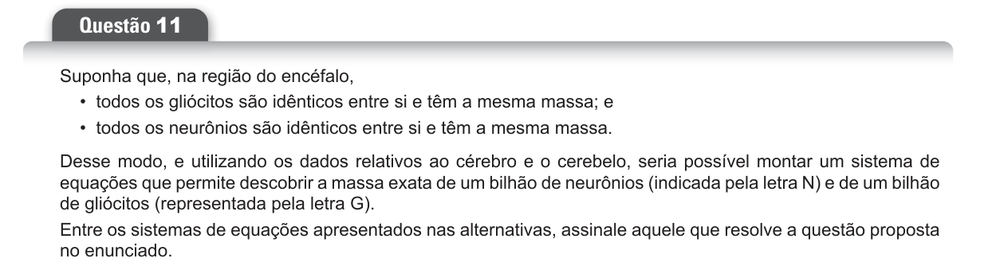
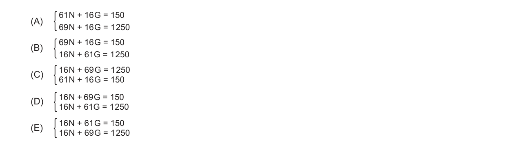

Selecione a letra correspondente às alternativas da imagem. Clique no enunciado para ampliar.
🔽 Ver gabarito comentado
Resposta: B
- N é a massa de um bilhão de neurônios e G a de um bilhão de gliócitos.
- Cérebro: 16N + 61G = 1250.
- Cerebelo: 69N + 16G = 150.
- A alternativa B apresenta exatamente essas equações (não é preciso resolvê-las).
- Nota: a hipótese numérica idealizada levaria a uma massa negativa para N, sem sentido físico, mas a montagem pedida é B.